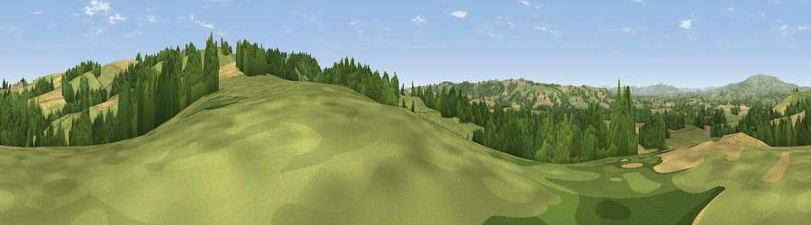

Viewpoint near Upper Rochford
#22668 in England · top 60% of its area beats it · near Upper RochfordThe view, rendered

A 360° render of this exact spot computed from the terrain model, tree cover and land cover — summer colours, afternoon light, calibrated against photographs of famous viewpoints. Real trees, hedges and buildings will differ in detail.
The panorama
Grey silhouette: terrain skyline in each direction (720 bearings, Earth curvature and refraction included). Dashed green: skyline with trees (+15 m) and buildings (+8 m) as obstacles. Blue strip: how far the ground is visible on each bearing.
Where the view opens
Wedge length = distance to the farthest visible ground on that bearing (vegetation-aware). Rings at 10, 25 and 50 km.
What fills the view
40% grassland · 37% cropland · 22% woodland
Angular shares of the visible panorama (visual magnitude), not map area. Landscape diversity 0.48 (0–1 Shannon).
Key numbers
More beautiful places nearby
The staircase of upgrades: each row has a higher view potential than everything closer. Driving times are estimates from straight-line distance, calibrated against real road routing — check an actual route before setting out.
| Place | Direction | Drive | Score |
|---|---|---|---|
| Viewpoint near Upper Sapey | E · 1 km | ~3 min | 67.0 |
| Viewpoint near Upper Rochford | NE · 1 km | ~4 min | 71.0 |
| Walsgrove Hill | E · 10 km | ~19 min | 79.6 |
| Woodbury Hill | E · 10 km | ~19 min | 81.6 |
| Viewpoint near Great Witley | E · 10 km | ~20 min | 83.4 |
| Titterstone Clee | NNW · 14 km | ~25 min | 83.8 |
| North Hill | SSE · 22 km | ~37 min | 86.8 |
| Worcestershire Beacon | SSE · 23 km | ~38 min | 87.1 |
52.28357, -2.51998 · source: screening · position refined by local search. Computed location — check access rights before visiting.